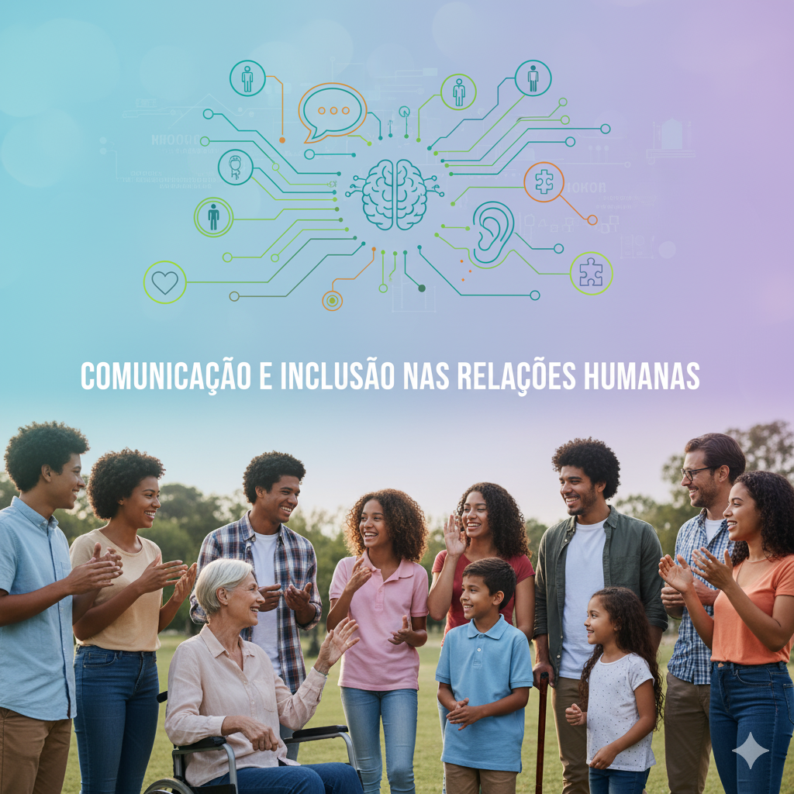
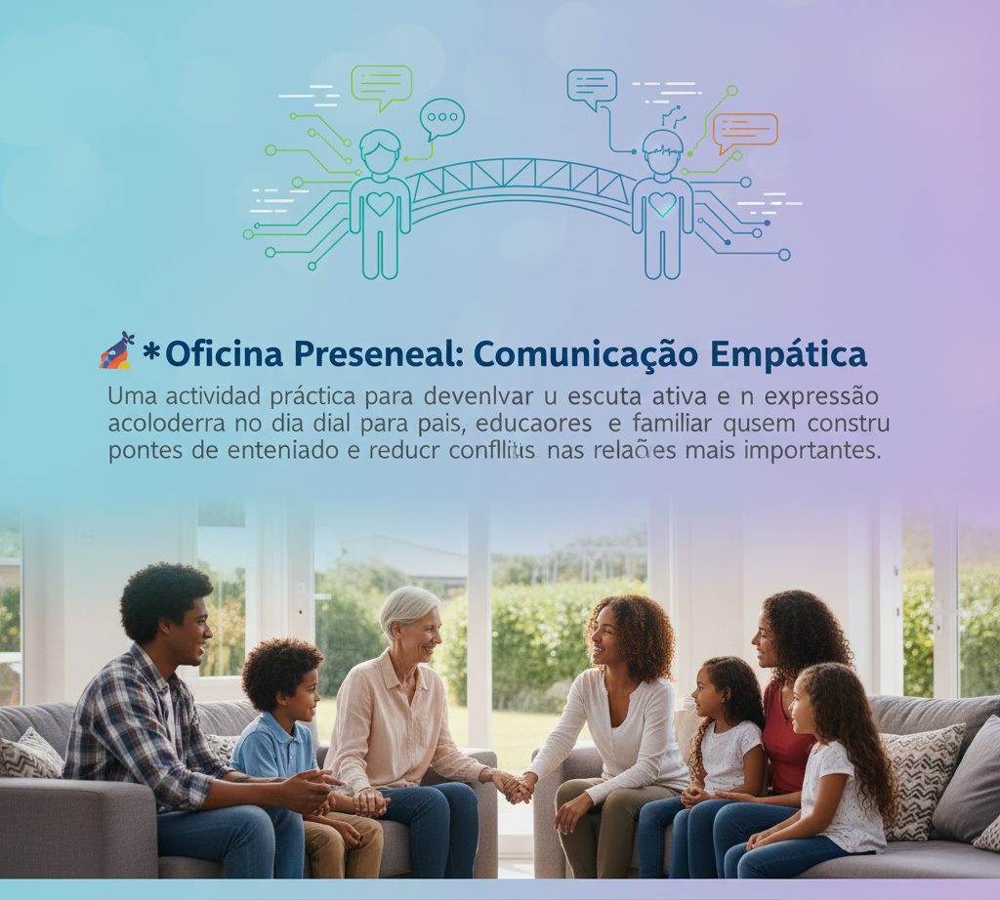

Eventos que inspiram, conectam e fortalecem nossa rede de apoio
🌆 Palestras Presenciais
Em dezembro, estaremos levando nossas palestras e rodas de conversa para diferentes cidades. Venha participar e viver essa troca ao vivo!
Rio de Janeiro
Data: 10 e 11 de dezembro de 2025
Tema: Acolhimento e empatia na escuta social
Saber Mais

São Paulo
Data: 17 de dezembro de 2025
Tema: Comunicação e inclusão nas relações humanas
Saber Mais
💻 Palestras Online
Conecte-se de onde estiver! Nossas palestras online são transmitidas ao vivo com espaço para diálogo e troca de experiências.
🎨 Oficina Presencial: Comunicação Empática
Um momento para praticar a escuta com atenção e falar com o coração. Ideal para quem quer melhorar suas conversas e criar laços mais genuínos.
Data: 22 de dezembro de 2025 - Local: Centro Cultural do Rio
Inscreva-se agora
